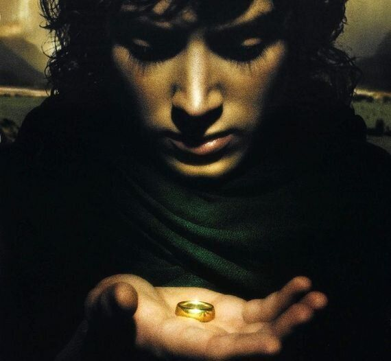
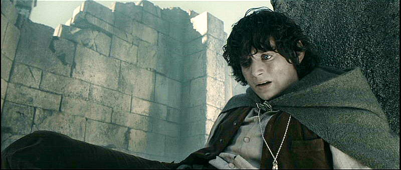
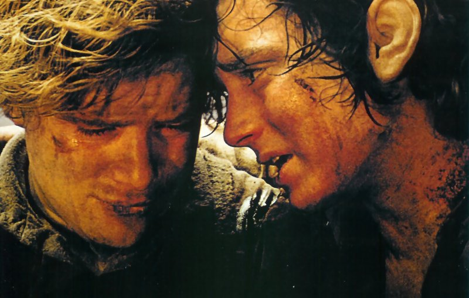

<!DOCTYPE html>
<html>
  <head>
    <meta charset="utf-8" />
    <link rel="stylesheet" type="text/css" href="styles/stylesheet.css" />
    <title>Frodo Blog</title>
  </head>
</html>
<body>
  
  <h1>On Frodo and Mental Health</h1>
  <h2>Matt Goodman</h2>
  <p>
    Frodo Baggins is not your typical alpha leading-hobbit. In many ways, Frodo
    is an unsympathetic main character; introverted, morose, uncommunicative, he
    even unforgivably abandons his loyal companion Samwise Gamgee after Sam has
    travelled half the world with him. This is explained by the negative
    influence of the One Ring- in possibly the worst ever instance of ‘taking
    the rubbish to the tip’, Frodo must carry the vessel of all evil halfway
    across the world to the only place it can be safely supposed of. But what if
    we ignore the ring, or imagine it as a metaphor for depression?
  </p>
  
  <p>
    There are certainly many similarities between Frodo’s experience and those
    who sufferers from depression. The ring weighs on Frodo physically,
    literally dragging him down. Depression is sometimes described as being like
    a huge weight, making everyday life a drag. The ring frequently influences
    Frodo to engage in
    <a href="https://www.youtube.com/watch?v=DqdDmrUuvx8">
      risky and self-destructive behaviour</a
    >, a behavioural pattern often associated with depression. Frodo’s journey
    through Middle Earth can seem like one the journey of one suffering from
    depression- impossible, exhausting, and with no end in sight. Elijah Wood
    portrays this excellently in his body language and his facial expressions-
    the sense of utter weariness, of a great internal unexpressed struggle, of
    forcing himself to continue beyond hope. Watch the films without the ring
    and you’re watching a depressed hobbit on a very long hike.
  </p>
  <p>
    It’s not just depression- several of Frodo’s experiences are congruent with
    anxiety. Axiety is like the Nazgul: shrieking black demons that haunt
    Frodo’s every move.
    <a href="https://youtu.be/Cewdg-lxXXg?t=96">Their cries</a> leave him
    incapacitated, clutching his head in physical pain, his breath in raggedy
    gulps.
    <!--flashbacks, PTSD-->
    Then there’s his experiences
    <a href="https://youtu.be/GlqqGKZ3Uac?t=80">when he puts the ring on,</a>
    which are remarkably similar to a panic attacks. In these short periods,
    Frodo is completely disassociated from the world around him, in a state of
    utter terror and laid bare before a terrible, all-seeing and judgemental
    Great Eye from which he cannot escape or hide.<!--Add more evidence, more people's stories of panic attacks-->
  </p>
  <p>
    Things could go badly for Frodo, were it not for Sam. Sam cannot carry
    Frodo’s burden, but he can help him in other ways. He cares for Frodo,
    looking out for him, providing him with companionship, cooking him
    <a href="https://youtu.be/JXuqJ4c1dxE?t=59">delicious nutritious food,</a>
    advising him, rescuing him from trouble-sometimes of Frodo’s own making. Sam
    is patient and encouraging. He even goes as far as to physically carry Frodo
    when he can’t walk. Sam is an excellent example of caring for someone with
    mental health difficulties.
  </p>
  
</body>
